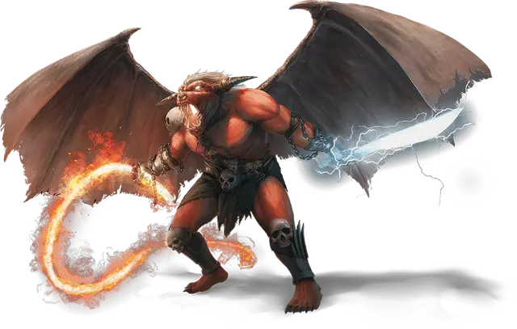

Балор
Balor
Огромное Исчадие (Демон), хаотично-злое

Класс Доспеха 19 (природный доспех)
Хиты 262 (21к12 + 126)
Скорость 40 футов, летая 80 футов
| мод | спас | ||
|---|---|---|---|
| СИЛ | 26 | +8 | +14 |
| ЛОВ | 15 | +2 | +2 |
| ТЕЛ | 22 | +6 | +12 |
| мод | спас | ||
|---|---|---|---|
| ИНТ | 20 | +5 | +5 |
| МДР | 16 | +3 | +9 |
| ХАР | 22 | +6 | +12 |
Сопротивление урону холод, электричество; дробящий, колющий, рубящий от немагических атак
Иммунитет к урону огонь, яд
Иммунитет к состояниям отравление
Чувства истинное зрение 120 футов, пассивное Восприятие 13
Языки Бездны, Телепатия 120 фт.
Опасность 19 (22000 опыта)
Бонус мастерства +6
Особенности
Предсмертная агония. Когда балор умирает, он взрывается, и все существа в пределах 30 футов от него должны совершить спасброски Ловкости Сл 20, получая 70 (20к6) урона огнём при провале, или половину этого урона при успехе. Взрыв воспламеняет горючие предметы в этой области, которые никто не несет и не носит, и уничтожает оружие балора.
Огненная аура. В начале каждого хода балора все существа в пределах 5 футов от него получают 10 (3к6) урона огнём, а горючие предметы в ауре, которые никто не несет и не носит, воспламеняются. Существо, касающееся балора или попадающее по нему рукопашной атакой, находясь в пределах 5 футов от него, получает 10 (3к6) урона огнём.
Сопротивление магии. Балор совершает с преимуществом спасброски от заклинаний и прочих магических эффектов.
Магическое оружие. Атаки оружием балора являются магическими.
Вариант: призыв демона. У некоторых демонов может быть действие, позволяющее им призывать других демонов.
Призыв демона (1/день). Демон выбирает, кого призвать, и пытается это сделать. Балор получает 50% шанс призыва 1к8 вроков [vrock], 1к6 хезроу [hezrou], 1к4 глабрезу [glabrezu], 1к3 нальфешни [nalfeshnee], 1к2 марилит [marilith] или одного гористро [goristro].
Призванный демон появляется в свободном пространстве в пределах 60 футов от призывателя, и действует как его союзник, не имеющий способности призывать демонов. Он призывается на 1 минуту или пока призыватель не умрёт или действием его не отпустит.
Действия
Мультиатака. Балор совершает две атаки: одну длинным мечом, и одну кнутом.
Длинный меч. Рукопашная атака оружием: +14 к попаданию, досягаемость 10 футов, одна цель. Попадание: 21 (3к8 + 8) рубящего урона плюс 13 (3к8) урона электричеством. Если балор совершает критическое попадание, он бросает кости урона три раза, а не два.
Кнут. Рукопашная атака оружием: +14 к попаданию, досягаемость 30 футов, одна цель. Попадание: 15 (2к6 + 8) рубящего урона плюс 10 (3к6) урона огнём, и цель должна преуспеть в спасброске Силы Сл 20, иначе её подтянет на 25 футов к балору.
Телепортация. Балор магическим образом телепортируется вместе со всем несомым и носимым снаряжением, на расстояние до 120 футов в свободное пространство, которое он видит.
Описание
Часть древнего и ужасного зла, балоры командуют демоническими армиями, стремятся получить власть и уничтожают любого, кто встанет у них на пути.
Орудуя пламенным кнутом и мечом, наполненным силой шторма, балоры питают свой боевой дух ненавистью и яростью. В предсмертной агонии поток демонической ярости низвергается огненным взрывом, который может уничтожить даже самых крепких врагов.
См. дополнительно статью: "Бестиарий: Демоны"